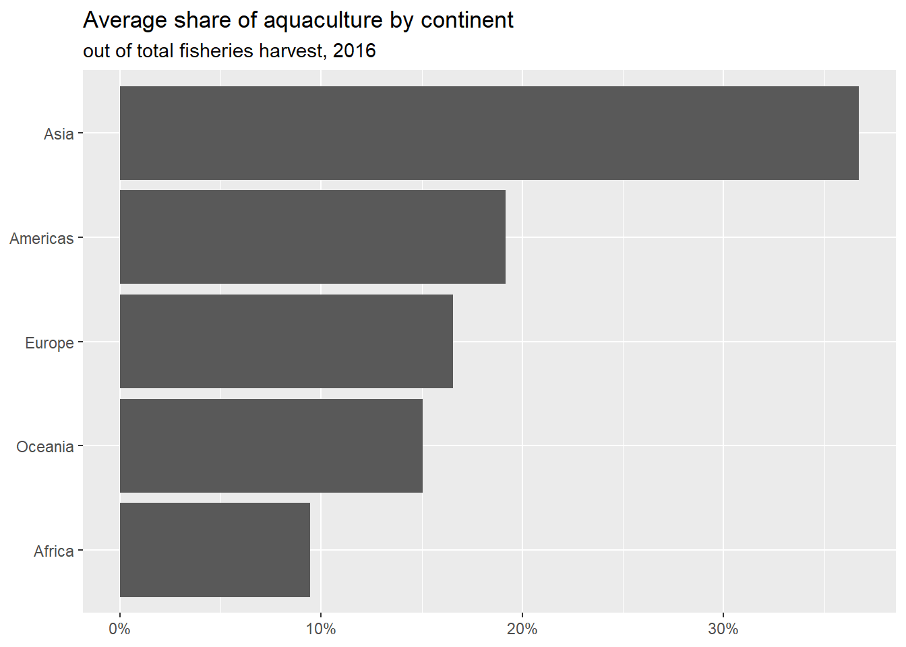

The Fisheries and Aquaculture Department of the Food and Agriculture Organization of the United Nations collects data on fisheries production of countries.
Our goal is to create a visualization of the mean share of aquaculture by continent.
Your turn (2 minutes):
Which variable(s) will we use to join the fisheries and continents data frames?
We want to keep all rows and columns from fisheries and add a column for corresponding continents. Which join function should we use?
Demo: Join the two data frames and name assign the joined data frame back to fisheries.
Attaching package: 'scales'
The following object is masked from 'package:purrr':
discard
The following object is masked from 'package:readr':
col_factor
Rows: 82 Columns: 4
── Column specification ────────────────────────────────────────────────────────
Delimiter: ","
chr (1): country
dbl (3): capture, aquaculture, total
ℹ Use `spec()` to retrieve the full column specification for this data.
ℹ Specify the column types or set `show_col_types = FALSE` to quiet this message.
Rows: 245 Columns: 2
── Column specification ────────────────────────────────────────────────────────
Delimiter: ","
chr (2): country, continent
ℹ Use `spec()` to retrieve the full column specification for this data.
ℹ Specify the column types or set `show_col_types = FALSE` to quiet this message.
#same as the followingleft_join(fisheries, continents)
Joining, by = c("country", "continent")
# A tibble: 82 × 5
country capture aquaculture total continent
<chr> <dbl> <dbl> <dbl> <chr>
1 Angola 486490 655 487145 Africa
2 Argentina 755226 3673 758899 Americas
3 Australia 174629 96847 271476 Oceania
4 Bangladesh 1674770 2203554 3878324 Asia
5 Brazil 705000 581230 1286230 Americas
6 Cambodia 629950 172500 802450 Asia
7 Cameroon 233190 2315 235505 Africa
8 Canada 874727 200765 1075492 Americas
9 Chad 110000 94 110094 Africa
10 Chile 1829238 1050117 2879355 Americas
# … with 72 more rows
Start
Demo: Take a look at the updated fisheries data frame. There are some countries that were not in continents. First, identify which countries these are (they will have NA values for continent). Then, manually update the continent information for these countries using the case_when function. Finally, check that these updates have been made as intended and no countries are left without continent information.
Let’s use the mock y data set to answer this question.
Let’s make a new column called ind. In this column, if the input of value is larger than 3, make the input of the ind column say “yes”. If not, make it say no.
y<-tibble( value =c(1, 2, 4), ycol =c("y1", "y2", "y4"))names(y)
Below fixes the NA with the appropriate country. Run ?case_when and comment through each line of code below.
fisheries<-fisheries|># data thenmutate(# create or change variables continent =case_when(country=="Democratic Republic of the Congo"~"Africa",country=="Hong Kong"~"Asia",country=="Myanmar"~"Asia", TRUE~continent))
Demo: Add a new column to the fisheries data frame called aq_prop. We will calculate it as aquaculture / total. Save the resulting frame as fisheries.
Your turn (5 minutes): Now expand your calculations to also calculate the mean, minimum and maximum aquaculture proportion for continents in the fisheries data. Note that the functions for calculating minimum and maximum in R are min() and max() respectively.
# A tibble: 5 × 4
continent min_aq_prop mean_aq_prop max_aq_prop
<chr> <dbl> <dbl> <dbl>
1 Africa 0 0.0943 0.803
2 Americas 0 0.192 0.529
3 Asia 0 0.367 0.782
4 Europe 0.00682 0.165 0.618
5 Oceania 0.0197 0.150 0.357
Demo: Using your code above, create a new data frame called fisheries_summary that calculates minimum, mean, and maximum aquaculture proportion for each continent in the fisheries data.
Demo: Then, determine which continent has the largest value of max_ap. Take the fisheries_summary data frame and order the results in descending order of max aquaculture proportion.
Hint: We can control labels using scale_x_continious or scale_y_continous. Within this function, we can change label specifications: https://scales.r-lib.org/reference/label_percent.html
fisheries_summary|>ggplot(aes(y =fct_reorder(continent , mean_aq_prop) , x =mean_aq_prop))+geom_col()+labs(title ="Average share of aquaculture by continent", subtitle ="out of total fisheries harvest, 2016", x =NULL, y =NULL)+scale_x_continuous(label =label_percent(accuracy =1))

Pivot Practice
Run the following code below. Are these data in long or wide format? Why?
x<-tibble( state =rep(c("MT", "NC" , "SC"),2), group =c(rep("C", 3), rep("D", 3)), obs =c(1:6))x
# A tibble: 6 × 3
state group obs
<chr> <chr> <int>
1 MT C 1
2 NC C 2
3 SC C 3
4 MT D 4
5 NC D 5
6 SC D 6
Pivot these data so that the data are wide. i.e. Each state should be it’s own unique observation (row). Save this new data set as y.
# A tibble: 6 × 3
state group obs
<chr> <chr> <int>
1 MT C 1
2 MT D 4
3 NC C 2
4 NC D 5
5 SC C 3
6 SC D 6
Pivot Practice 2
Let’s try this on a real data set.
The Portland Trailblazers are a National Basketball Association (NBA) sports team. These data reflect the points scored by 9 Portland Trailblazers players across the first 10 games of the 2021-2022 NBA season.
Rows: 9 Columns: 11
── Column specification ────────────────────────────────────────────────────────
Delimiter: ","
chr (1): Player
dbl (10): Game1_Home, Game2_Home, Game3_Away, Game4_Home, Game5_Home, Game6_...
ℹ Use `spec()` to retrieve the full column specification for this data.
ℹ Specify the column types or set `show_col_types = FALSE` to quiet this message.
– Take a slice at the data. Are these data in wide or long format?
– Suppose now that you are asked to have two separate columns within these data. One column to represent Game, and one to represent Location. Make this happen below. Save your new data set as new.blazer